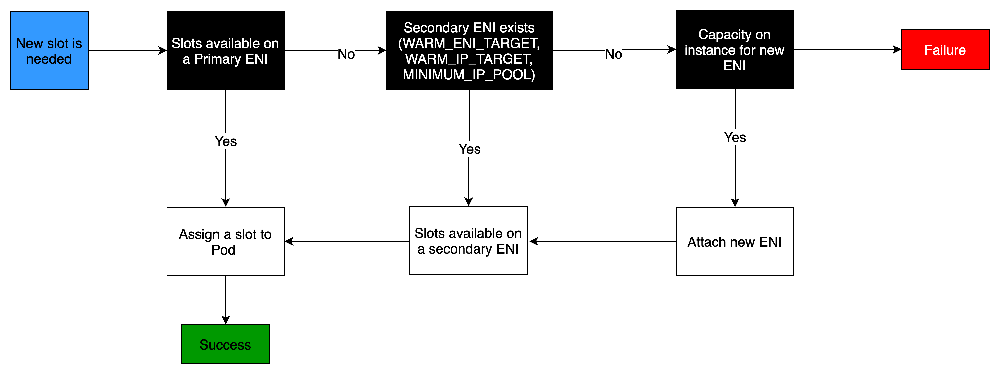
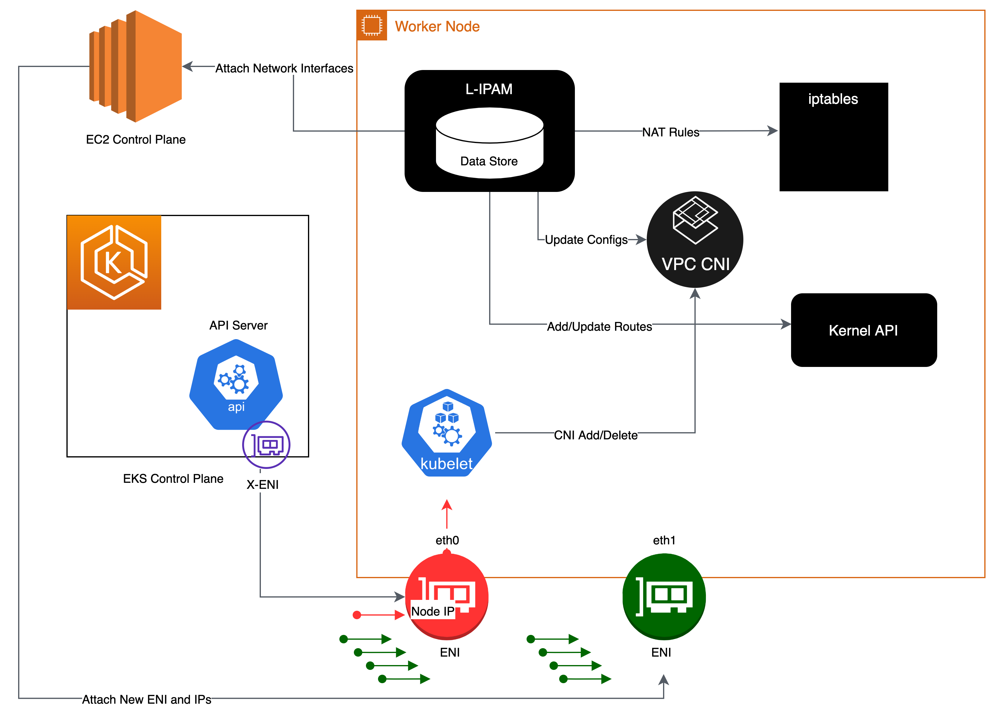
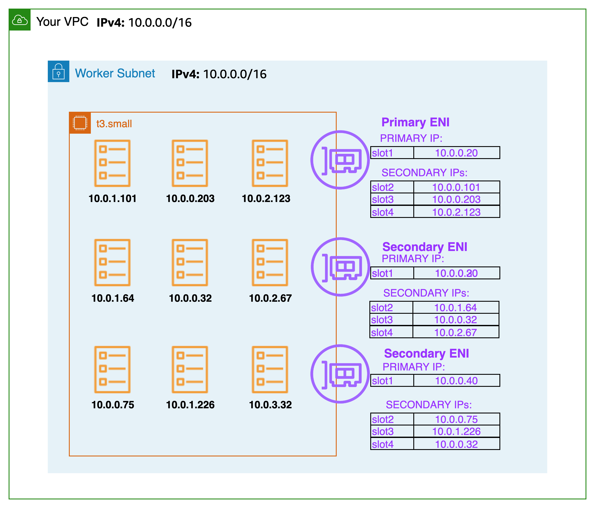

Amazon VPC CNI¶
Amazon EKS 通过 Amazon VPC Container Network Interface(VPC CNI) 插件实现集群网络。该 CNI 插件允许 Kubernetes Pod 拥有与 VPC 网络上相同的 IP 地址。更具体地说,Pod 内的所有容器共享一个网络命名空间,它们可以使用本地端口进行通信。
Amazon VPC CNI 有两个组件:
- CNI 二进制文件,用于设置 Pod 网络以实现 Pod 到 Pod 的通信。CNI 二进制文件在节点根文件系统上运行,当有新的 Pod 添加到节点或从节点中删除时,kubelet 会调用它。
- ipamd,一个长期运行的节点本地 IP 地址管理(IPAM)守护进程,负责:
- 管理节点上的 ENI,以及
- 维护可用 IP 地址或前缀的预热池
创建实例时,EC2 会创建并附加一个与主子网关联的主 ENI。主子网可以是公有或私有的。在 hostNetwork 模式下运行的 Pod 使用分配给节点主 ENI 的主 IP 地址,并与主机共享相同的网络命名空间。
CNI 插件管理节点上的弹性网络接口(ENI)。当节点配置时,CNI 插件会自动从节点的子网中分配一个 IP 地址池(即预热池)到主 ENI。池的大小由节点的实例类型决定。根据 CNI 设置,一个槽可以是一个 IP 地址或一个前缀。当 ENI 上的一个槽被分配后,CNI 可能会附加额外的 ENI 并为其分配预热池。这些额外的 ENI 称为辅助 ENI。每个 ENI 根据实例类型只能支持一定数量的槽。CNI 会根据需要的槽数量(通常对应 Pod 数量)附加更多 ENI 到实例,直到节点无法再支持额外的 ENI。CNI 还会预先分配"预热"ENI 和槽,以加快 Pod 启动。请注意,每种实例类型都有最大 ENI 数量限制,这是 Pod 密度(每个节点的 Pod 数量)的一个约束,除了计算资源之外。

每种 EC2 实例类型支持的网络接口数量和可用槽数量是不同的。由于每个 Pod 都会消耗一个 IP 地址槽,因此您可以在特定 EC2 实例上运行的 Pod 数量取决于可以附加到该实例的 ENI 数量以及每个 ENI 支持的槽数。我们建议将 EKS 用户指南中的最大 Pod 数设置为避免耗尽实例的 CPU 和内存资源。使用 hostNetwork 的 Pod 不包括在此计算中。您可以考虑使用名为 max-pod-calculator.sh 的脚本来计算 EKS 推荐的特定实例类型的最大 Pod 数。
概述¶
辅助 IP 模式是 VPC CNI 的默认模式。本指南提供了在启用辅助 IP 模式时 VPC CNI 行为的一般概述。ipamd 的功能(IP 地址分配)可能会根据 VPC CNI 的配置设置而有所不同,例如前缀模式、每个 Pod 的安全组和自定义网络。
Amazon VPC CNI 被部署为名为 aws-node 的 Kubernetes Daemonset,运行在工作节点上。当工作节点配置时,它会附加一个默认的 ENI,称为主 ENI。CNI 会从附加到节点主 ENI 的子网中分配一个预热池的 ENI 和辅助 IP 地址。默认情况下,ipamd 会尝试为节点分配一个额外的 ENI。当一个 Pod 被调度并分配一个来自主 ENI 的辅助 IP 地址时,IPAMD 会分配另一个 ENI。这个"预热"ENI 可以加快 Pod 网络的启动。当辅助 IP 地址池耗尽时,CNI 会添加另一个 ENI 来分配更多地址。
ENI 和 IP 地址池的数量通过名为 WARM_ENI_TARGET、WARM_IP_TARGET、MINIMUM_IP_TARGET 的环境变量进行配置。aws-node Daemonset 会定期检查是否附加了足够数量的 ENI。当满足所有 WARM_ENI_TARGET 或 WARM_IP_TARGET 和 MINIMUM_IP_TARGET 条件时,就认为附加了足够数量的 ENI。如果 ENI 数量不足,CNI 会调用 EC2 API 附加更多 ENI,直到达到 MAX_ENI 限制。
WARM_ENI_TARGET- 整数,值 >0 表示要求启用- 要维护的预热 ENI 数量。当一个 ENI 作为节点的辅助 ENI 附加,但没有被任何 Pod 使用时,它就处于"预热"状态。也就是说,该 ENI 的 IP 地址都还没有分配给 Pod。
- 示例:考虑一个实例有 2 个 ENI,每个 ENI 支持 5 个 IP 地址。WARM_ENI_TARGET 设置为 1。如果实例正好使用了 5 个 IP 地址,CNI 会维护 2 个附加到实例的 ENI。第一个 ENI 正在使用,所有 5 个可能的 IP 地址都已使用。第二个 ENI 是"预热"的,所有 5 个 IP 地址都在池中。如果在实例上启动另一个 Pod,需要第 6 个 IP 地址。CNI 将从第二个 ENI 的池中分配这第 6 个 IP 地址。第二个 ENI 现在正在使用,不再处于"预热"状态。CNI 将分配第 3 个 ENI 来维持至少 1 个预热 ENI。
注意
预热 ENI 仍然会消耗来自 VPC CIDR 的 IP 地址。IP 地址在被工作负载(如 Pod)关联之前是"未使用"或"预热"的。
WARM_IP_TARGET,整数,值 >0 表示要求启用- 要维护的预热 IP 地址数量。预热 IP 是在活动附加的 ENI 上可用的,但尚未分配给 Pod。换句话说,可用的预热 IP 数量是在不需要附加额外 ENI 的情况下可以分配给 Pod 的 IP 数量。
- 示例:考虑一个实例有 1 个 ENI,每个 ENI 支持 20 个 IP 地址。WARM_IP_TARGET 设置为 5,WARM_ENI_TARGET 设置为 0。只会附加 1 个 ENI,直到需要第 16 个 IP 地址。然后,CNI 将附加第二个 ENI,从子网 CIDR 中消耗 20 个可能的地址。
MINIMUM_IP_TARGET,整数,值 >0 表示要求启用- 任何时候都要分配的最小 IP 地址数量。这通常用于在实例启动时预先分配多个 ENI。
- 示例:考虑一个新启动的实例。它有 1 个 ENI,每个 ENI 支持 10 个 IP 地址。MINIMUM_IP_TARGET 设置为 100。ENI 立即附加 9 个额外的 ENI,总共 100 个地址。这种情况发生时,不管 WARM_IP_TARGET 或 WARM_ENI_TARGET 的值是什么。
该项目包括一个子网计算器 Excel 文档。该计算器文档模拟了在不同 ENI 配置选项(如 WARM_IP_TARGET 和 WARM_ENI_TARGET)下指定工作负载的 IP 地址消耗情况。

当 Kubelet 收到添加 Pod 的请求时,CNI 二进制文件会查询 ipamd 以获取可用的 IP 地址,ipamd 然后将其提供给 Pod。CNI 二进制文件连接主机和 Pod 网络。
默认情况下,部署在节点上的 Pod 被分配到与主 ENI 相同的安全组。或者,Pod 也可以配置有不同的安全组。

当 IP 地址池耗尽时,插件会自动附加另一个弹性网络接口到实例,并为该接口分配另一组辅助 IP 地址。这个过程会一直持续,直到节点无法再支持额外的弹性网络接口。

当 Pod 被删除时,VPC CNI 会将 Pod 的 IP 地址放入 30 秒的冷却缓存。冷却缓存中的 IP 地址不会分配给新的 Pod。冷却期结束后,VPC CNI 会将 Pod IP 地址移回预热池。冷却期可以防止 Pod IP 地址过早被回收,并允许集群中所有节点上的 kube-proxy 完成更新 iptables 规则。当 IP 或 ENI 的数量超过预热池设置时,ipamd 插件会将 IP 和 ENI 返回给 VPC。
如上所述,在辅助 IP 模式下,每个 Pod 都会从附加到实例的 ENI 之一获得一个辅助私有 IP 地址。由于每个 Pod 都使用一个 IP 地址,因此您可以在特定 EC2 实例上运行的 Pod 数量取决于可以附加到该实例的 ENI 数量以及每个 ENI 支持的 IP 地址数量。VPC CNI 会检查限制文件,以了解每种实例类型允许的 ENI 和 IP 地址数量。
您可以使用以下公式来确定节点上可部署的最大 Pod 数量。
(实例类型的网络接口数量 × (每个网络接口的 IP 地址数量 - 1)) + 2
+2 表示使用主机网络的 Pod,如 kube-proxy 和 VPC CNI。Amazon EKS 要求 kube-proxy 和 VPC CNI 在每个节点上运行,这些要求已纳入 max-pods 值。如果您想运行其他使用主机网络的 Pod,请考虑更新 max-pods 值。
+2 表示使用主机网络的 Kubernetes Pod,如 kube-proxy 和 VPC CNI。Amazon EKS 要求 kube-proxy 和 VPC CNI 在每个节点上运行,并且已计入 max-pods。如果您计划运行更多使用主机网络的 Pod,请考虑更新 max-pods。您可以在启动模板的用户数据中指定 --kubelet-extra-args "—max-pods=110"。
例如,在一个有 3 个 c5.large 节点(3 个 ENI 和每个 ENI 最多 10 个 IP)的集群中,当集群启动并有 2 个 CoreDNS Pod 时,CNI 将消耗 49 个 IP 地址并将它们保持在预热池中。预热池可以在部署应用程序时加快 Pod 启动。
节点 1(有 CoreDNS Pod):2 个 ENI,分配 20 个 IP
节点 2(有 CoreDNS Pod):2 个 ENI,分配 20 个 IP
节点 3(无 Pod):1 个 ENI,分配 10 个 IP
请记住,基础设施 Pod(通常作为守护进程集运行)每个都会占用 max-pod 计数。这些可能包括:
- CoreDNS
- Amazon Elastic LoadBalancer
- 指标服务器的操作 Pod
我们建议您通过结合这些 Pod 的容量来规划您的基础设施。有关每种实例类型支持的最大 Pod 数,请参见 GitHub 上的 eni-max-Pods.txt。

建议¶
部署 VPC CNI 托管插件¶
在配置集群时,Amazon EKS 会自动安装 VPC CNI。不过,Amazon EKS 支持托管插件,使集群能够与底层 AWS 资源(如计算、存储和网络)进行交互。我们强烈建议您使用托管插件(包括 VPC CNI)部署集群。
Amazon EKS 托管插件提供 VPC CNI 的安装和管理功能。Amazon EKS 插件包含最新的安全补丁和错误修复,并经 AWS 验证可与 Amazon EKS 配合使用。VPC CNI 插件使您能够持续确保 Amazon EKS 集群的安全性和稳定性,并减少安装、配置和更新插件所需的工作量。此外,托管插件可通过 Amazon EKS API、AWS Management Console、AWS CLI 和 eksctl 进行添加、更新或删除。
您可以使用 --show-managed-fields 标志与 kubectl get 命令查找 VPC CNI 的托管字段。
托管插件通过每 15 分钟自动覆盖配置来防止配置偏移。这意味着,通过 Kubernetes API 在插件创建后对托管插件进行的任何更改,都将被自动防止偏移的过程覆盖,并在插件更新过程中设置为默认值。
EKS 管理的字段列在 managedFields 下,manager 为 EKS。EKS 管理的字段包括服务帐户、镜像、镜像 URL、存活探测、就绪探测、标签、卷和卷挂载。
信息
最常用的字段,如 WARM_ENI_TARGET、WARM_IP_TARGET 和 MINIMUM_IP_TARGET,不受管理,更新插件时不会被重置。对这些字段的更改将在插件更新时保留。
我们建议在更新生产集群之前,先在非生产集群中测试插件行为以了解特定配置。此外,请遵循 EKS 用户指南中的插件配置步骤。
迁移到托管插件¶
您将负责管理自管理 VPC CNI 的版本兼容性和更新安全补丁。要更新自管理插件,您必须使用 Kubernetes API 和 EKS 用户指南中概述的说明。我们建议您迁移到托管插件,并在迁移之前备份当前的 CNI 设置。要配置托管插件,您可以使用 Amazon EKS API、AWS Management Console 或 AWS 命令行界面。
如果字段被列为托管,Amazon EKS 将使用默认设置替换 CNI 配置设置。我们警告不要修改托管字段。插件不会重置诸如预热环境变量和 CNI 模式之类的配置字段。在迁移到托管 CNI 时,Pods 和应用程序将继续运行。
更新前备份 CNI 设置¶
VPC CNI 在客户数据平面(节点)上运行,因此 Amazon EKS 在发布新版本或更新集群到新的 Kubernetes 次版本后,不会自动更新插件(托管和自管理)。要更新现有集群的插件,您必须通过 update-addon API 或在 EKS 控制台中单击插件的"立即更新"链接来触发更新。如果您已部署自管理插件,请遵循更新自管理 VPC CNI 插件中提到的步骤。
我们强烈建议您一次只更新一个次版本。例如,如果您当前的次版本是 1.9,并且想要更新到 1.11,您应该先更新到 1.10 的最新补丁版本,然后再更新到 1.11 的最新补丁版本。
在更新 Amazon VPC CNI 之前,请检查 aws-node Daemonset。备份现有设置。如果使用托管插件,请确认您没有更新 Amazon EKS 可能会覆盖的任何设置。我们建议在自动化工作流程中添加更新后的挂钩,或在插件更新后手动应用步骤。
对于自管理插件,请将备份与 GitHub 上的 releases 进行比较,以查看可用版本并熟悉您想要更新到的版本中的更改。我们建议使用 Helm 管理自管理插件,并利用值文件应用设置。任何涉及 Daemonset 删除的更新操作都会导致应用程序停机,必须避免。
了解安全上下文¶
我们强烈建议您了解用于有效管理 VPC CNI 的安全上下文。Amazon VPC CNI 有两个组件:CNI 二进制文件和 ipamd(aws-node) Daemonset。CNI 作为二进制文件在节点上运行,可访问节点根文件系统,并拥有特权访问权限,因为它需要处理节点级别的 iptables。当 Pod 被添加或删除时,kubelet 会调用 CNI 二进制文件。
aws-node Daemonset 是一个长期运行的进程,负责在节点级别管理 IP 地址。aws-node 在 hostNetwork 模式下运行,允许访问环回设备和同一节点上其他 Pod 的网络活动。aws-node init 容器以特权模式运行,并挂载 CRI 套接字,允许 Daemonset 监控 Pod 使用的 IP。Amazon EKS 正在努力删除 aws-node init 容器的特权要求。此外,aws-node 需要更新 NAT 条目并加载 iptables 模块,因此以 NET_ADMIN 特权运行。
Amazon EKS 建议部署 aws-node 清单定义的安全策略,用于 Pod 的 IP 管理和网络设置。请考虑更新到 VPC CNI 的最新版本。此外,如果您有特定的安全需求,请考虑在 GitHub 上提出问题。
为 CNI 使用单独的 IAM 角色¶
AWS VPC CNI 需要 AWS Identity and Access Management (IAM) 权限。在使用 IAM 角色之前,需要设置 CNI 策略。您可以使用 AmazonEKS_CNI_Policy,这是 AWS 托管的 IPv4 集群策略。AmazonEKS CNI 托管策略只有 IPv4 集群的权限。您必须为 IPv6 集群创建一个单独的 IAM 策略,权限如此处所列。
默认情况下,VPC CNI 继承Amazon EKS 节点 IAM 角色(托管和自管理节点组)。
强烈建议为 Amazon VPC CNI 配置一个单独的 IAM 角色。否则,Amazon VPC CNI 的 Pod 将获得分配给节点 IAM 角色的权限,并可访问分配给节点的实例配置文件。
VPC CNI 插件创建并配置了一个名为 aws-node 的服务帐户。默认情况下,该服务帐户绑定到附有 Amazon EKS CNI 策略的 Amazon EKS 节点 IAM 角色。要使用单独的 IAM 角色,我们建议创建一个新的服务帐户,并附加 Amazon EKS CNI 策略。要使用新的服务帐户,您必须重新部署 CNI Pod。在创建新集群时,请考虑为 VPC CNI 托管插件指定 --service-account-role-arn。确保从 Amazon EKS 节点角色中删除 Amazon EKS CNI 策略,包括 IPv4 和 IPv6。
建议阻止对实例元数据的访问,以最小化安全漏洞的影响范围。
处理存活/就绪探测失败¶
我们建议增加 EKS 1.20 及更高版本集群的存活和就绪探测超时值(默认 timeoutSeconds: 10),以防止探测失败导致应用程序 Pod 陷入 containerCreating 状态。这个问题在数据密集型和批处理集群中有所观察。高 CPU 使用会导致 aws-node 探测健康失败,从而无法满足 Pod CPU 请求。除了修改探测超时,还要确保正确配置 aws-node 的 CPU 资源请求(默认 CPU: 25m)。除非您的节点出现问题,否则我们不建议更新这些设置。
我们强烈建议您在联系 Amazon EKS 支持时,在节点上运行 sudo bash /opt/cni/bin/aws-cni-support.sh。该脚本将帮助评估节点上的 kubelet 日志和内存利用率。请考虑在 Amazon EKS 工作节点上安装 SSM Agent 以运行该脚本。
在非 EKS 优化 AMI 实例上配置 IPTables 转发策略¶
如果您使用自定义 AMI,请确保在 kubelet.service 下将 iptables 转发策略设置为 ACCEPT。许多系统将 iptables 转发策略设置为 DROP。您可以使用 HashiCorp Packer 和来自 AWS GitHub 上的 Amazon EKS AMI 存储库的构建规范和配置脚本来构建自定义 AMI。您可以更新 kubelet.service,并按照此处指定的说明创建自定义 AMI。
定期升级 CNI 版本¶
VPC CNI 是向后兼容的。最新版本适用于所有 Amazon EKS 支持的 Kubernetes 版本。此外,VPC CNI 作为 EKS 插件提供(请参见上文"部署 VPC CNI 托管插件")。虽然 EKS 插件编排了插件的升级,但它不会自动升级像 CNI 这样的插件,因为它们在数据平面上运行。您有责任在升级托管和自管理工作节点后升级 VPC CNI 插件。